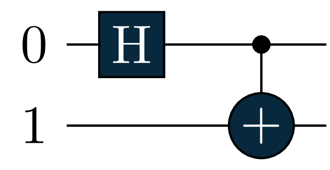
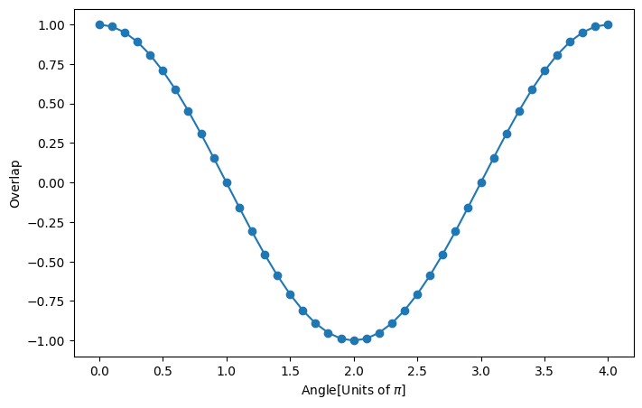
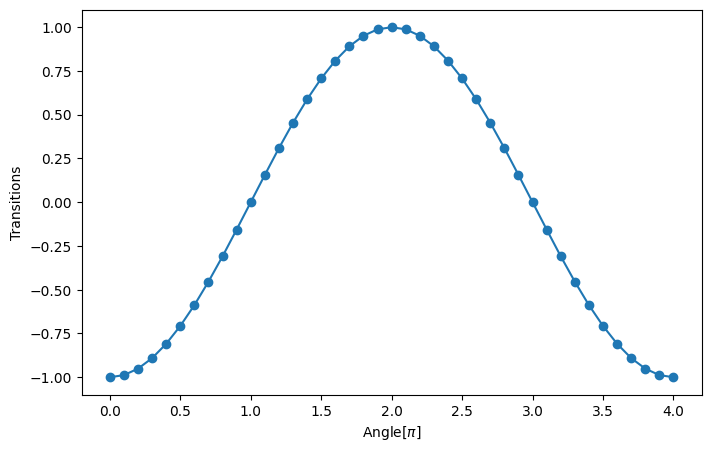
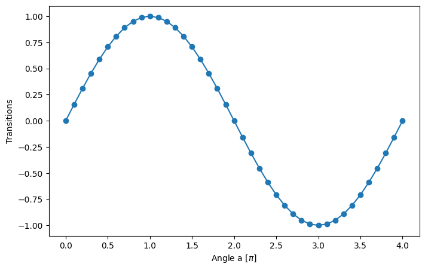
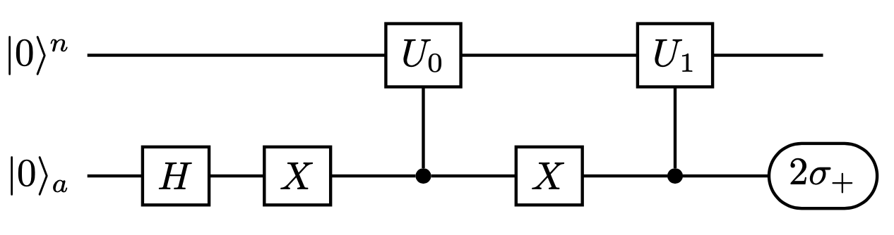
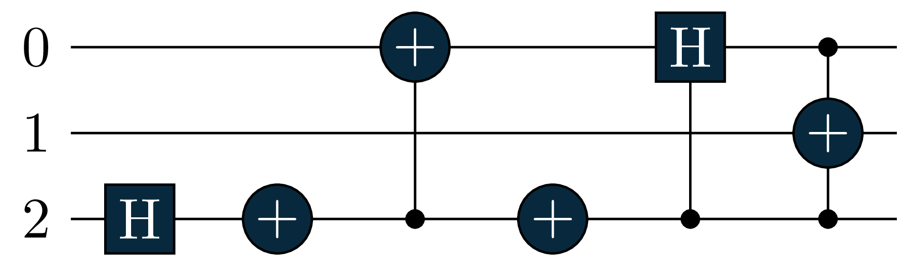
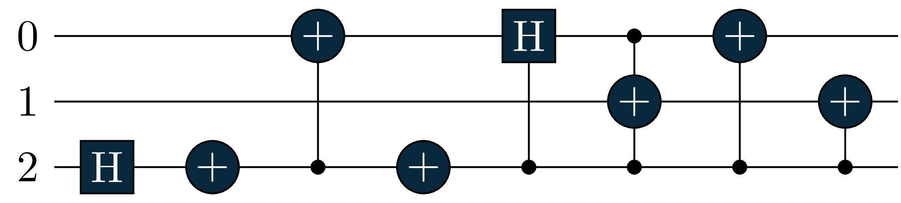
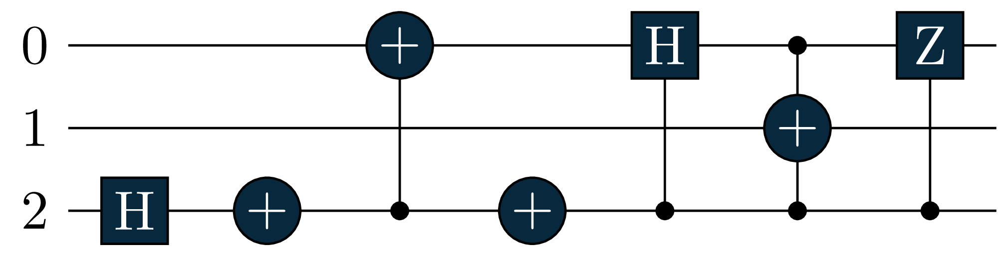

#tequila importations
import tequila as tq
from tequila.circuit.gates import H, X, Rx, CX
from tequila.hamiltonian.qubit_hamiltonian import QubitHamiltonian
#extra importations
import numpy as np
import matplotlib.pyplot as plt
%matplotlib inlineThis is a tutorial to get to know the new Tequila’s function: braket.
With this new function you will be able to easily compute:
- self overlaps
- overlaps between two different states
- the expectation value of an operator
- the transition element of an operator
So, let’s import Tequila (and some of its modules) and see how this function works.
Basic usage
1. Self overlap
Let’s begin from the simplest (and maybe trivial) possible application of the braket function: the computation of the self overlap of a quantum state. One can prepare an arbitrary circuit, corresponding to the state \(|\psi\rangle\) and then calculate the self overlap \[\langle \psi|\psi\rangle.\]
We can prepare for example a Bell state of two qubits:
Note you can also run tq.draw(bell, backend='qiskit') for drawing the circuit (optional). It would result in a circuit like the one below
bell = tq.QCircuit()
bell += H(0)
bell += CX(0,1)- 1
- creates an empty circuit object with no gates
- 2
- add a hadamard gate to qubit 0
- 3
- add a \(CNOT\) with control in qubit 1 and target in 1

Then, we can simply call the braket function passing as unique argument our quantum circuit, this can also be specified as ket:
self_overlap_real, self_overlap_im = tq.braket(ket=bell)
self_overlap = self_overlap_real + 1.0j*self_overlap_im- 1
- get the real and the imaginary part of the state
- 2
-
join the save and imaginary part of the overlap.
self_overlapis not a complex number
As we have seen the braket function always return two objects, one for the real part and one for the imaginary one. These are tq.Objecitve and need to be simulated in order to obtain a numeric value.
Due to the laws of quantum mechanics the overlap of a state with itself, namely the self overlap, must always be equal to 1, namely \[\langle \psi|\psi\rangle=1.\]
self_overlap_value = tq.simulate(self_overlap)
assert self_overlap_value == 1- 1
- compute the self overlap of the state
- 2
- if the self overlap is not equal to \(1\), this should throw an exception
/opt/anaconda3/envs/BlogQA/lib/python3.9/site-packages/tequila/objective/objective.py:591: ComplexWarning: Casting complex values to real discards the imaginary part
result = onp.asarray(self.transformation(*ev_array), dtype=float)In this particular case Tequila is aware that the self overlap is always 1, so no circuit needs to be executed. This can be checked by printing the self_overlap Objective:
Note that this object consists of further attributes rather than only the mere value
print(self_overlap)- 1
- printing the overlap shows all of its object attributes
Objective with 0 unique expectation values
total measurements = 0
variables = []
types = []2. Overlap between two different states
The second step will be to compute the overlap between different states \[\langle\psi _2|\psi _1\rangle.\] Even in this case we can exploit the braket function.
Let’s prepare two orthogonal states. In this case the overlap must be equal to 0:
U0 = X(0) # state |10>
U1 = H(0)+CX(0,1) # Bell state 1/sqrt(2)*(|00>+|11>)- 1
- this circuit will perpare the two-qubit state |10> since we assume two input-qubits in state |0> and a \(X\) (NOT) is applied to the first one
- 2
- also here we assume an input of |00> and send it through the circuit that generated the 4 bell-states
Now, we can call the braket function passing as arguments our quantum circuits, specifying which will be the ket and which the bra. Otherwise the first will be automatically selected as ket and second as bra:
br_objective_real, br_objective_im = tq.braket(ket=U0, bra=U1)
br_overlap = br_objective_real + 1.0j*br_objective_im
br_overlap_value = tq.simulate(br_overlap)
br_overlap_value- 1
- specify input states for writing them in the braket notation
- 2
-
joining real and imaginary part based on the states produced by the circuits
U0andU1 - 3
-
simulates the
tq.Objectiveobject to obtain a numeric values - 4
- prints the overlap, this one should be equal to \(0\)
0.0We can also define a non-orthogonal state with respect to the previous prepared Bell state. This can be obtained for example by preparing a Bell state followed by a rotation around X-axis.
One can then check that changing the angle value will result in changing the overlap between the two states:
angle = tq.Variable("angle")
U2 = U1 + Rx(angle*np.pi, 1)
br_objective_real, br_objective_im = tq.braket(ket=U1, bra=U2)
br_overlap = br_objective_real + 1.0j*br_objective_im
S = tq.compile(br_overlap)
overlaps = []
for value in np.arange(0,4.1, 0.1):
# set the value of the angle we want to simulate
variables = {"angle" : value}
# let's simulate the Objective
br_overlap_value = S(variables=variables)
overlaps.append(round(br_overlap_value,3))
# plotting the trend
fig = plt.figure(figsize=(8,5))
plt.plot(np.arange(0,4.1, 0.1), overlaps, marker = 'o')
plt.xlabel(r'Angle[Units of $\pi$]')
plt.ylabel('Overlap')- 1
- declare a variable of for a parametrized angle
- 2
- Bell state followed by a rotation around X-axis
- 3
- fetch once again the real and imaginary components after writing the input states in braket form
- 4
- prepare real and imaginary part for overlap computation
- 5
- translate to backend - compile the state with an arbitrary parametrized angle
- 6
- generates values from the intervall \([0,4.1]\) with steps of \(0.1\) for simulating multiple angles
- 7
- associate angle with generated value from range above
- 8
-
simulate the
tq.Objectiveobject ad get the computed overlap - 9
- append the achieved value to a list of overlaps, since we compute multiple overlaps for multiple angles
- 10
- display the resulted numerical values of the overlaps as a graph
Text(0, 0.5, 'Overlap')
The resulting graphic depicts the trend of the overlaps for the given states above and angles within the interval \([0, 4.1]\) with steps of \(0.1\) between interval begin and interval end.
3. Expectation value of an Hamiltonian
At this stage, we can see how to use the braket function to calculate the expectation value of an Hamiltonian \(H\) with respect to a given state \(|\psi\rangle\): \[\langle\psi|H|\psi\rangle.\]
psi = H(0)+CX(0,1) # Bell state 1/sqrt(2)*(|00>+|11>)
#Hamiltonian definition
operator = QubitHamiltonian.from_string("-1.0*X(0)X(1)")- 1
- as before define the first bell state with the circuit generating the bell-basis and an input of |00>
- 2
- define an hamiltonian - this one is a sequence of Pauli-\(X\) matrices acting on the second and the first qubits respectivly and then a scale factor of \(-1\)
Now, one needs to pass to the braket function as ket argument our state and as operator argument the Hamiltonian.
As already seen before, always keep in mind that the braket function returns two Objecitves that need to be compiled afterwards.
With previous defined state and Hamiltonian we need to obtain an expectation value equal to \(-1\).
Note: now we utilize the braket function for computing an expectation value and not an overlap between two states as we did before, but since we provide the function this time with an hamiltonian = hermitian operator and a state instead of two states, the expectation value will be computed and not the overlap - no special changes needed.
br_exp_value_real, br_exp_value_im = tq.braket(ket=psi, operator=operator)
br_exp_value_tmp = br_exp_value_real + 1.0j*br_exp_value_im
br_exp_value = tq.simulate(br_exp_value_tmp)
br_exp_value- 1
-
applying the braket function on the bell-state and the hamiltonian, defining the hamiltonian as an
operator- important - 2
- joining real and imaginary part for computation
- 3
- simulate the expectation value
- 4
- show the expectatino value, should be equal to \(1\)
-0.9999999999999998Tequila is aware that an ExpectationValue is always real, so no circuit needs to be executed for the imaginary part. One can see this by printing br_exp_value_im:
print(br_exp_value_im)Objective with 0 unique expectation values
total measurements = 0
variables = []
types = []4. Transition element of an Hamiltonian
As last application, the braket function can be used to calculate transition elements of an operator \(H\) with respect to two different states \(|\alpha\rangle, \ |\beta\rangle\): \[\langle\beta|H|\alpha\rangle.\]
In order to see how things can change, we can proceed similarly to section 2 and vary the angle of a rotation:
#states definition
alpha = H(0)+CX(0,1) # Bell state 1/sqrt(2)*(|00>+|11>)
angle = tq.Variable("angle")
beta = alpha + Rx(angle*np.pi, 1) # Bell state followed by a rotation around X-axis
#Hamiltonian definition
operator = QubitHamiltonian("-1.0*X(0)X(1)")
br_trans_real, br_trans_im = tq.braket(ket=alpha, bra=beta, operator=operator)
br_trans_el = br_trans_real + 1.0j*br_trans_im
H_ab = tq.compile(br_trans_el)
transitions = []
for value in np.arange(0,4.1, 0.1):
variables = {"angle" : value}
br_trans_value = H_ab(variables=variables)
transitions.append(round(br_trans_value,3))- 1
- create the bell state the same way as before
- 2
- define a general angle for later computations as in the last example
- 3
- add a rotation after the bell state
- 4
- define the hamiltonian the same way as before
- 5
-
apply
braketfunction, specify theketand thebraas the bell state and the bell state followed by the \(X\) rotation respectively and get the real and imaginary part - 6
- use the real and imaginary part for creating a complex number
- 7
- compile this complex number by translating it to the backend
- 8
- use the same interval as a range for angle generation as before and the same step size
- 9
- set the of the angle we want to simulate
- 10
-
simulate the
tq.Objectiveto get the computed value - 11
- store these values rounded by 3 digits after the comma into a list of transitions for later plot
#plotting the trend
fig = plt.figure(figsize=(8,5))
plt.plot(np.arange(0,4.1, 0.1), transitions, marker = 'o')
plt.xlabel(r'Angle[$\pi$]')
plt.ylabel('Transitions')Text(0, 0.5, 'Transitions')
Even in this particular case the imaginary part is 0 (as for an ExpectationValue), but in this case this happens because the wave functions are real. The difference can be noticed again by printing br_trans_im where in this case there is one circuit to be executed:
print(br_trans_im)Objective with 1 unique expectation values
total measurements = 1
variables = [angle]
types = not compiledIn the end, we can address one small example in which the imaginary part is not 0. We have: \[|\psi_0\rangle=R_x(a)\rvert 0 \rangle = \cos(a/2) \rvert 0 \rangle - i\sin(a/2)\rvert 1\rangle\] \[|\psi_1\rangle=R_y(b)\rvert 0 \rangle = \cos(b/2) \rvert 0 \rangle + \sin(b/2)\rvert 1\rangle\]
and so the imaginary part of the transition amplitude comes down to \[\text{Im}(\langle\psi_1|Z|\psi_0\rangle ) = -\sin(a/2)\sin(b/2).\]
#states definition
a = tq.Variable("a")
b = 1
U0 = tq.gates.Rx(a*np.pi,0)
U1 = tq.gates.Ry(b*np.pi,0)
#Hamiltonian definition
operator = QubitHamiltonian("1.0*Z(0)")
br_trans_real, br_trans_im = tq.braket(ket=U0, bra=U1, operator=operator)
H_i = tq.compile(br_trans_im) #
transitions = []
for a in np.arange(0,4.1, 0.1):
variables = {"a" : a}
br_trans_value = H_i(variables=variables)
transitions.append(round(br_trans_value,3))- 1
- declare a variable of a general angle \(a\)
- 2
- declare a rotation around \(X\) with the angle \(a\pi\)
- 3
- rotation around \(Y\) axis with a fixed angle of \(\pi\)
- 4
- hamiltonian with a paulii \(Z\) gate on the first qubit
- 5
- specify ket, bra and operator and fetch the imaginary and real part
- 6
- transalte to backend and get the operator
- 7
- same range and step size as before
- 8
- set the angle values we want to simulate
- 9
-
simulate the
tq.Objectiveto get the computed value - 10
- store the computed values in a list for plotting
#plotting the trend
fig = plt.figure(figsize=(8,5))
plt.plot(np.arange(0,4.1, 0.1), transitions, marker = 'o')
plt.xlabel(r'Angle a [$\pi$]')
plt.ylabel('Transitions')Text(0, 0.5, 'Transitions')
Detailed explanation of internal braket structure
Let’s give some insight about the underlying structure of braket. This function in general just calls other functions to do all the different tasks one may need.
More in detail, the function acts as follows:
Self Overlap
- If only ket is passed,
braketdirectly returns the real and imaginary part of theself-overlapasObjective(). - This is required since one may combine the different
braketmodalities and this will require the compilation of anObjective().
Expectation Value
- If ket and operator are passed,
braketreturns theExpectationValueof the operator for the given state.
General Overlap
- If ket and bra are passed,
braketreturns the overlap between the two states. This is done by calling a new Tequila’s function calledmake_overlap. Further below this section we describe also how this function works.
Transition Element
- If ket, bra and operator are passed,
braketreturns the transition element of the operator by calling another new Tequila’s function calledmake_transition. Even in this case we provide a description of the internal structure.
Detailed explanation of the make_overlap function
Make_overlap and make_transition
The make_overlap function constructs the following circuit that is able to calculate the overlap between two states of \(n\) qubits.

Here, \(U_0\) and \(U_1\) are two unitaries such that:
\[U_0 |0\rangle^n=|\psi _ 0 \rangle \quad , \quad U_1 |0\rangle^n=|\psi _ 1 \rangle\]
so the circuit prepares the state:
\[ \frac{1}{\sqrt{2}}(|\psi _ 0 \rangle|0\rangle+|\psi _ 1 \rangle|1\rangle) \quad \]
In the end measuring the ancilla in the \(2\sigma_+\) base, gives as output:
\[^n\langle 0|U_ 0 ^\dagger U_1 |0\rangle^n=\langle\psi _ 0 |\psi _ 1 \rangle \quad \]
We can check the circuit build by the braket function with the code contained in the next cell:
U0 = X(0) # state |10>
U1 = H(0)+CX(0,1) # Bell state 1/sqrt(2)*(|00>+|11>)
br_objective_real, br_objective_im = tq.braket(ket=U1, bra=U0)
# tq.draw(br_objective_real)- 1
- assume two qubits in \(|00>\) and flip the first qubit to get \(|10>\)
- 2
- prepare a bell state as before
- 3
- get the real and imaginary parts consistently with the explained notation
- 4
- optionally draw the resulted circuit, should look like the one below

The resulting circuit should look like this
As we can see that one ancilla qubit has been added to our quantum register to be used as control qubit. The two circuits have been controlled and applied with the correct structure: the ancilla has a \(H\) gate allowing superposition, the \(U_0\) is performed when the ancilla is in state \(|0\rangle\) and the \(U_1\) when the ancilla is in state \(|1\rangle\). This circuit will be then measured in the \(X\) and \(Y\) basis to obtain, respectively, the real and the imaginary part \[(2\sigma_+=X+iY).\]
Regarding the make_transition function, this exploits make_overlap to calculate multiple contributes of Pauli strings within an Hamiltonian operator. More in detail, suppose we have an Hamiltonian \(H\) that can be decomposed as:
\[H = \sum_k c_k P_k\]
where \(P_k\) are Pauli strings (tensor product of Pauli operators acting on different qubits). Then, in order to calcuate the transition element, we can compute the single contributions and sum them up:
\[\langle\psi _ 0 | H |\psi _ 1 \rangle = \sum_k c_k \langle\psi _ 0 | P_k |\psi _ 1 \rangle \quad \]
Each of these contributions can be obtained from make_overlap by appending to the \(U_1\) circuit the one that implements the Pauli string: \[\langle\psi _ 0 | H |\psi _ 1 \rangle = \sum_k c_k \langle\psi _ 0 | P_k \psi _ 1 \rangle \quad \]
U0 = X(0) # state |10>
U1 = H(0)+CX(0,1) # Bell state 1/sqrt(2)*(|00>+|11>)
#Hamiltonian definition
operator = QubitHamiltonian("-1.0*X(0)X(1)+0.5*Z(0)")
br_trans_real, br_trans_im = tq.braket(ket=U1, bra=U0, operator=operator)
# tq.draw(br_trans_real)- 1
- prepare state for \(U_0\) the same way as before
- 2
- prepare bell state
- 3
- decalre hermitian operator consisting of a \(Z\) and two \(X\) paulis
- 4
-
use the
braketfunction to fetch imaginary and real consistently with the explained notation as before - 5
- optional: draw the circuits, thuy should look like the two circuits below


The resulting circuits should look like this
We can see that both br_trans_real and br_trans_im contain in this case 2 circuits with the same gates in the first part of the circuit, but different gates corresponding to the Pauli operators in the Pauli strings.
These two functions were designed according to “N. H. Stair et al. - A Multireference Quantum Krylov Algorithm for Strongly Correlated Electrons” - arXiv:1911.05163v1, published paper.
ATTENTION: In the attached ArXiv paper an \(X\) gate before the control of \(U_\alpha\) in Figure 2 is missing. This has been fixed in the published paper.